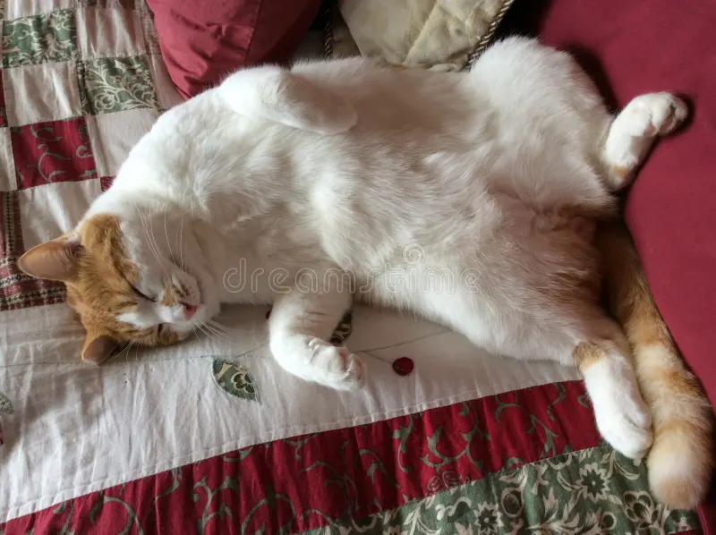

Titan's Story
Titan comes from a long line of lazy cats. He enjoys 18 hour naps on comfy quilted blankets. When he is not sleeping, he is basking in the sun while dozing off in his favorite corner nook.
Titan is a perfect fit for anyone who seeks a long nap companion on a lazy Sunday.